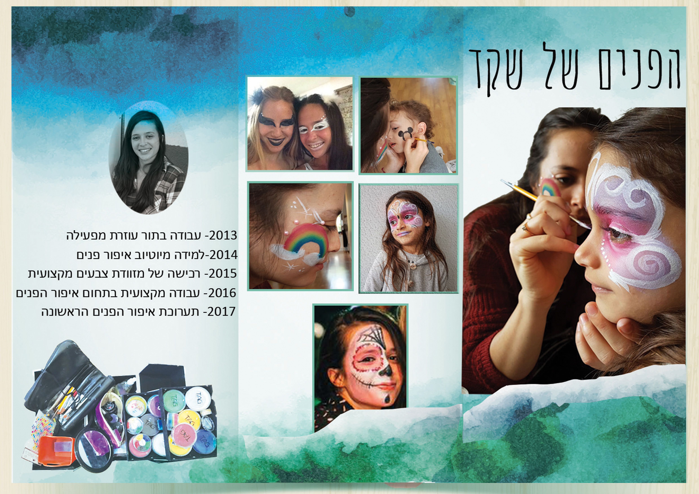

אחרי באלפון
אינפוגרפיקה (באנגלית: Information graphics או Infographics) היא הצגה חזותית של מידע כמותי ואיכותני בצורה ברורה וקלה להבנה, על ידי הדמיית נתונים לצורות חזותיות .
הייצוג שלי נעשה על שקד דינר. שקד היא יוצרת בתחום איפור הפנים, הברושור מציג את התערוכה של שקד ומראה חלק מהעבודות שלה. העמוד הראשון מציג בגדול את שקד מציירת-בפעולה. העמוד השני מתמקד בעבודות של שקד והשלישי בתהליך אותו עברה עם השנים ביחס לאיפור הפנים. הברושור אמור להראות אמיתי וליצר חוויה של פלייר לתערוכה של שקד.

יש ללחוץ על התמונה להגדלה
"כך נולד הצבע" דתיה בן דור
צור קשר
שיר דייקן- 0504441323


שיר דייקן- 0504441323